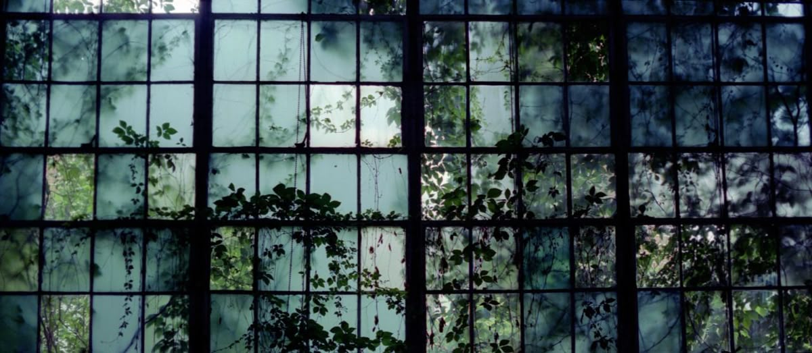
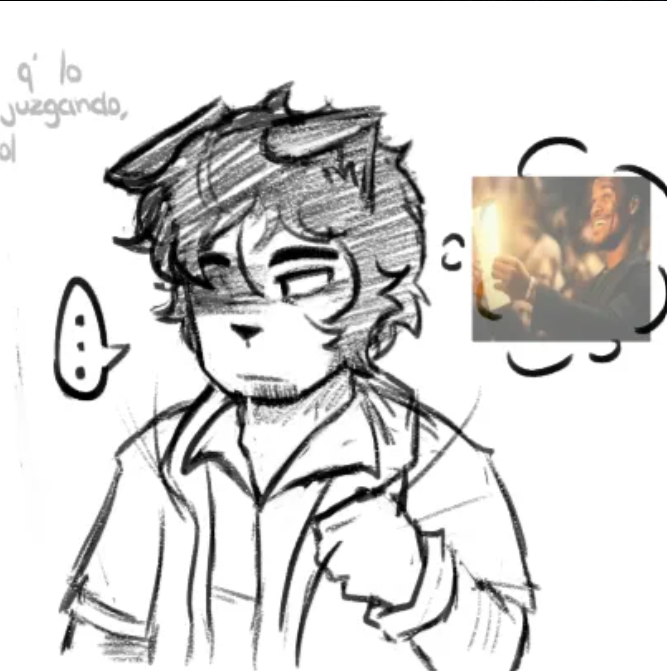
TQM furro, aqui tenemos algo especial para ti, sisisisis.
¡FELI CUM AAHHHHHH !
Tus cualidades: Tu compañerismo
Tus fortalezas: Tu resiliencia
Un recuerdo: Cuando el semáforo del repo te mató dos veces
Algo que admiramos: Tu preocupación por cada uno de nosotros
Algo que nos hace reír: Las tonterías que hacés cuando prendés cam.
Algo que te hace único: Tu pasividad
Algo que aprendimos de ti: A respetarnos a nosotros mismos.
Una frase que te representa: La mea vola hermano.
Un momento especial: Cuando te uniste por primera vez al vc
Una cosa que esperamos que nunca cambies: Tu hermosa energía
Algo que queremos verte lograr: Tener libertad para ser la mejor versión de Thomas posible
Una recomendación para tus 20: Que tu edad no defina tu persona.
Una canción que te dedicaríamos: Friends de BTS
Un personaje que nos recuerda a ti: Boris JSJSJSJ
Un lugar donde te imaginamos: en Linares con tu abu
Una palabra que te describe: Lazo
Una predicción para tu año: Vas a lograr las cosas que te propongas
Un deseo para ti: Que puedas ser un joven sin restricciones
Un agradecimiento: Gracias por escuchar cada palabra mía sin rechistar.
Un mensaje final de cumpleaños
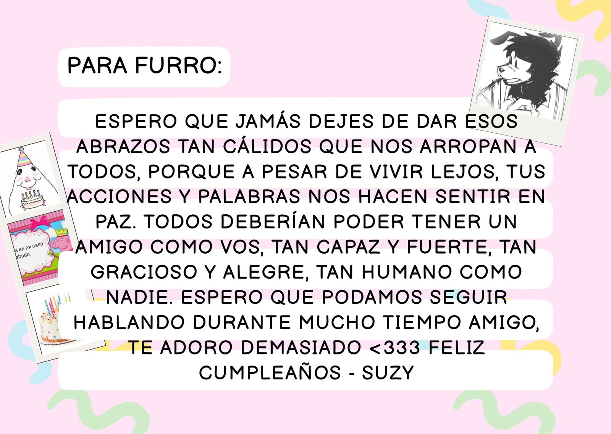
"Espero que jamás dejes de dar esos abrazos tan cálidos que nos arropan a todos, porque a pesar de vivir lejos, tus acciones y palabras nos hacen sentir en paz. Todos deberían poder tener un amigo como vos, tan capaz y fuerte, tan gracioso y alegre, tan humano como nadie. Espero que podamos seguir hablando durante mucho tiempo amigo, te adoro demasiado ❤️ Feliz cumpleaños" - Suzy
¡FELI CUM AAHHHHHH!
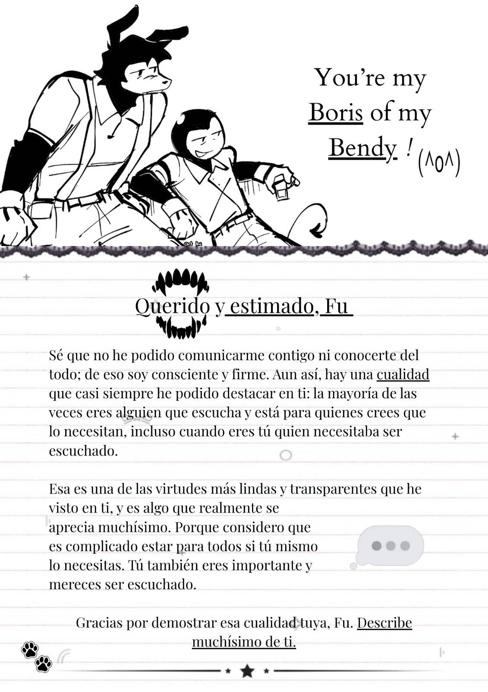
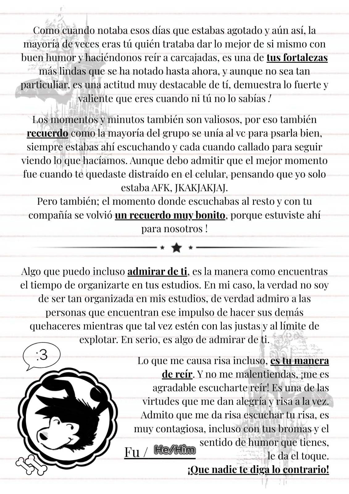
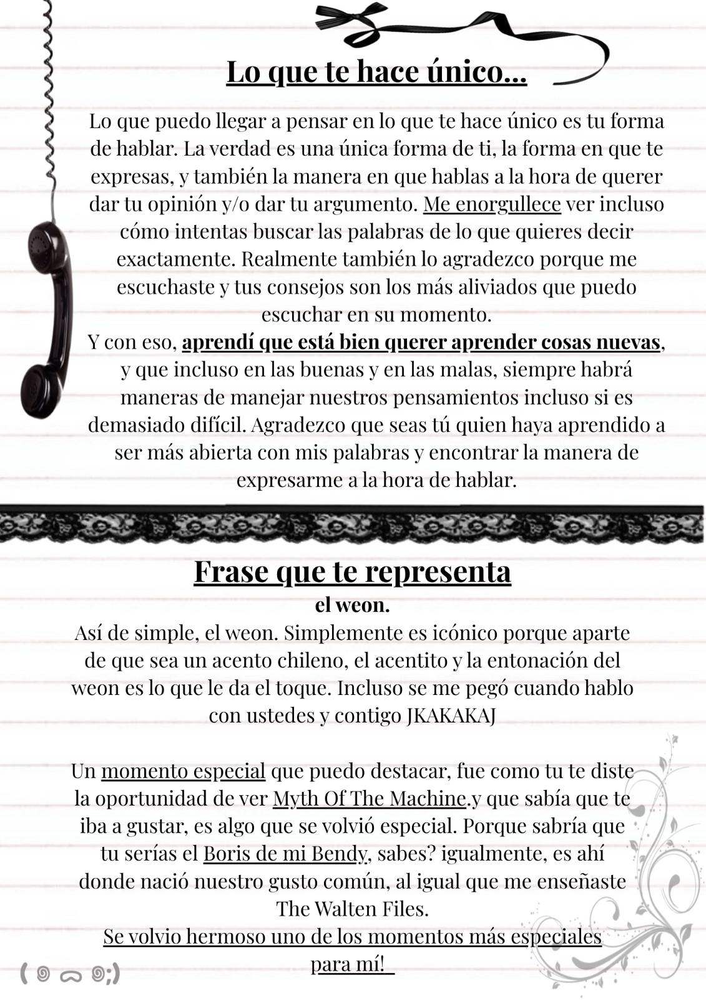
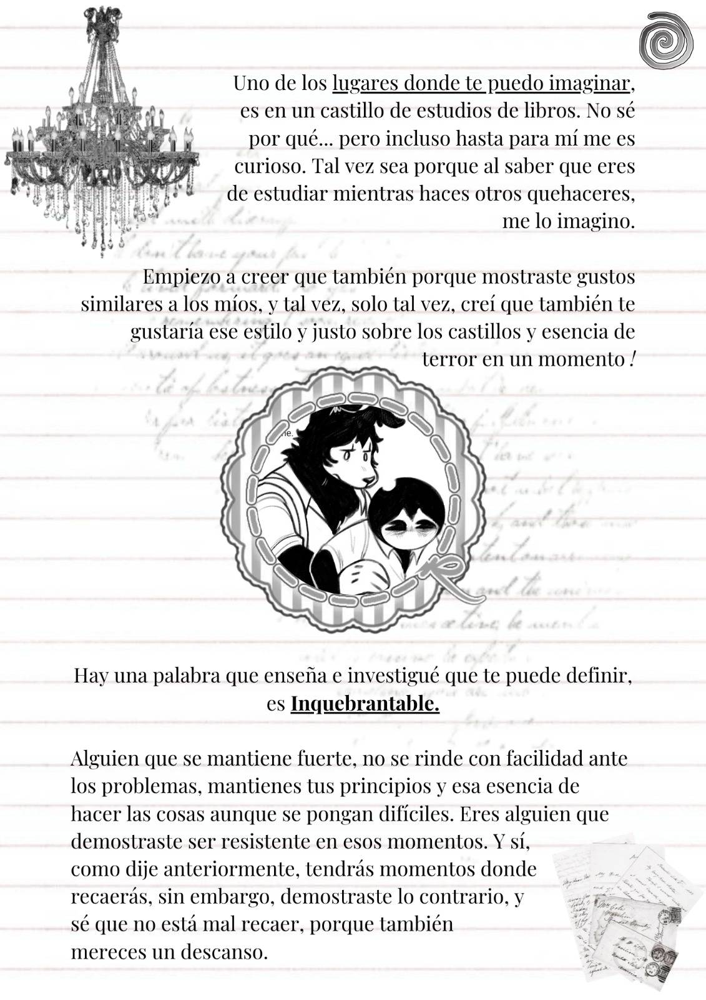
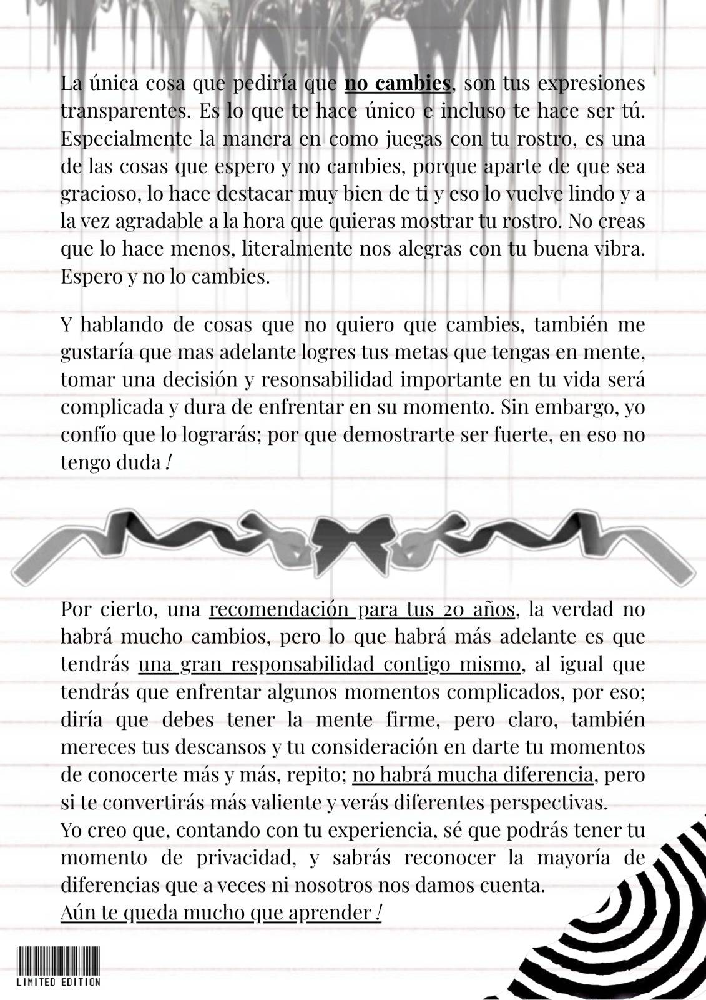
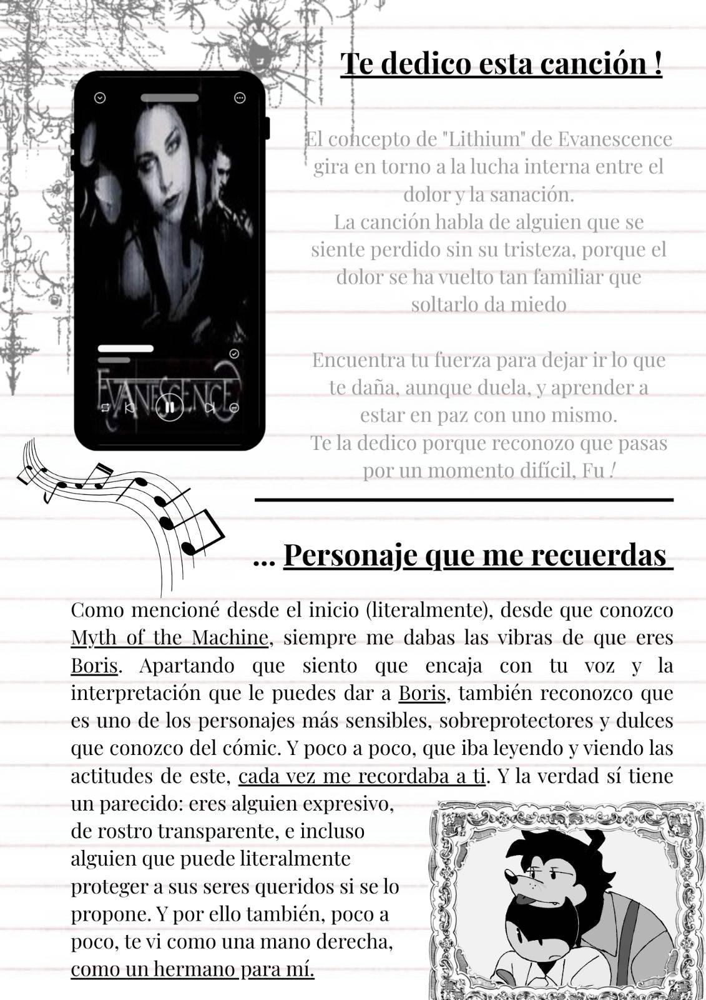
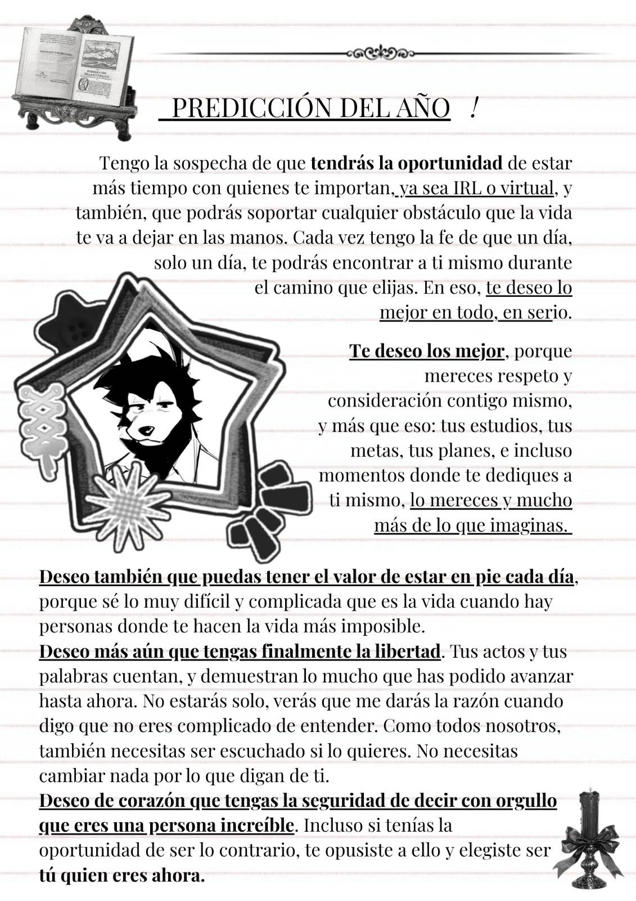
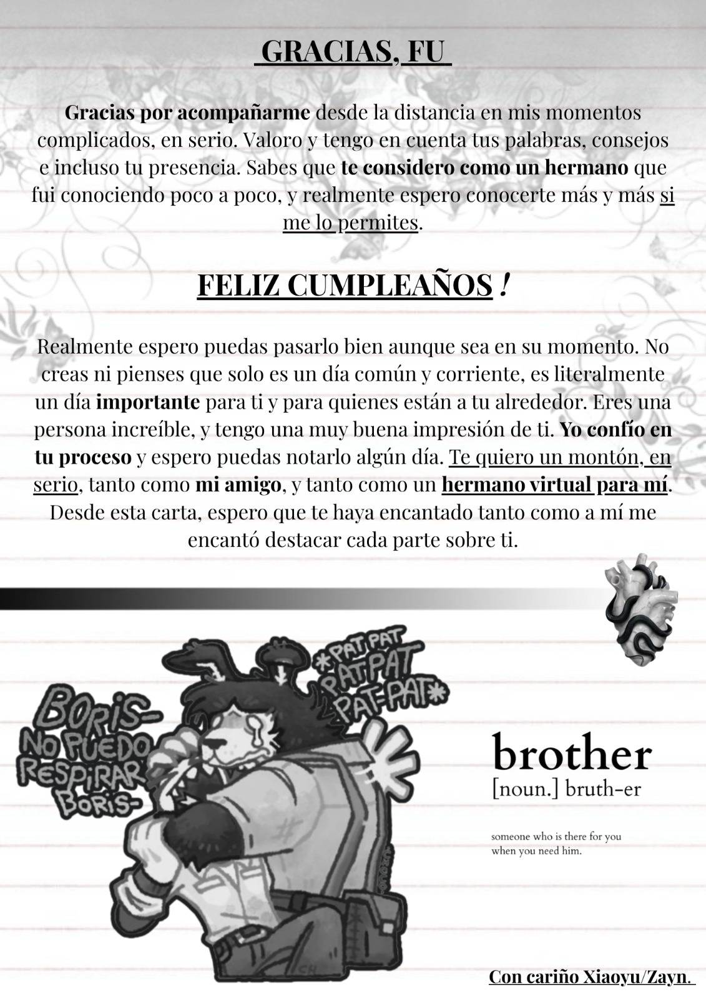
¡FELI CUM AAHHHHHH !
¡Alooo fuuuuuuuuuuuu! 💥 Mi mucaco, weeeenaaaaaaaaas - ¡Feliz CUM-PLEANIOOOOOS! - Ahhhh, NOWAY
Se que tal vez no hablo mucho contigo muchacho, suelo estar a veces ahí, ya sabes ocupado 😔🔫, peeeero, aún así, tu cualidad más especial es tu increíble paciencia, usted muchacho es súper paciente, pero también si alguien colma o inrrupe en tu paciencia lo harás notar y es súper clave, hay un balance, hay un equilibrio: "OHMMM no voy a caer en el RAGEBAIT, Ohmmm"
Otra cosa muy goood de usted mucaco, es que es tremendo insano, pues es que eres resiliente, es clave como Perú, por qué es prácticamente tu fortaleza, apesar de las circunstancias y que todo esté totalmente encontra o no sea sencillo, ahí estás muchacho, peleando y enfrentando. Y aunque de miedo o mucha incertidumbre, ahí estás tanqueando brutalmente y no te rindes, sin duda alguna, eso es top insano papupro.
Aún recuerdo la primera que vez que te conocí muchacho, un usuario del discord interesado en buscar a alguien con quién jugar, hasta que poco a poco, llamada tras llamada te vi presente en cada momento, entre ellos, las tremendas desveladas super insanas que eran super tarde y eso que en el horario en el que estas que para las horas a las que nos quedábamos eran dignas de un imsomio atroz. Ahí estabas, escuchando, aportando tu opinión y tú punto, invitando a jugar y si no se podía, transmitiendo lo que haces por qué es tremendo, algo que podía tener de fondo mientras yo hacía tarea, super top muchacho 🗣️.
Admiro mucho tu humor, es que es clave como Perú mucaco, cuando me di cuenta que podía hacer chistes absurdisimos y fue de contexto y que podrías entenderlos... Pff, humor avanzado, le sabes mucaco, me recuerda a esas llamadas en la madruga donde definitivamente ya habíamos quedamos suficientes neuronas
Me hace reír que sigas la broma, que incluso puedas hacer todavía más gracioso el chiste, nanana es súper insano, yo de plano, la paso muy bien, super chill super excelente pero, cuando hago un chistesito y sigues la broma o la referencia, es algo que me hace reír, genuinamente.
Eres único muchacho, de todo el grupo, su apodo apenas tiene 2 letras, "Fu" JAJAJSHD no lo pensamos mucho, era para no decir furro lo cual ya ni recuerdo por qué era, pero es que "Fu" suena bieeeen, sumándole todas las características anteriores, te hace especial, te convierte en alguien sublime, la magia de la proyectada muchacho 🗣️
Yo, por mi parte, aprendí algo de ti, la compañía, lo importante que es - OMAIGOD - usted es el ejemplo a seguir de lo que es acompañar, en cada llamada, podían ser en la tarde, noche o madrugada, ahí estabas muchacho, acompañando, podías estar ahí jugando algo pero siempre acompañando a alguien del grupo, y eso, eso es digno de GANADOR
Sueles, de ves en cuando escribir una expresión que es "mish" yo no sabía que era eso, tipo, "¿Huh ?" Investigando me di cuenta que es una expresión chilena que indica asombro, "¡Mish!" Algo así, incluso diferentes formas en como escribes que se me quedaron grabadas como el "hno" - que según yo es una abreviatura de "hermano" 💥 WAAAAT, OMAIGOD, que manera más interesante de abreviar, que Increidebol
Un momento especial así siempre han sido las llamadas nocturnas desveladas, es que yo, definitivamente me quedaba más tiempo ahí solamente por qué no podía dormir, y estabas ahí, es más, hasta tienes un sticker el cual me da mucha risa y siempre me recuerda a ello, es súper clave.
Genuinamente espero que nunca cambies en tus intereses, en ocasiones recuerdo verte estudiar, y aunque solía distraerte la llamada, podías seguir haciendo tus pendientes, actualmente quizás no estés tan presente, quizas ya no estemos en llamada muy seguido, pero en mi caso, lo entiendo completamente y mientras todo lo puedas tener controlado está súper bien, tienes la capacidad, yo confío muchacho, usted es Albert Einstein 🗣️💥
Por eso mismo, me emociona que puedas complir tus metas muchacho, usted tiene la paciencia, el enfoque y la organización aunque sienta todo lo contrario. Usted es resiliente y es tremendo insano ganador, yo confío plenamente en sus capacidades y por eso, cuenta con mi apoyo mucaco sisisisi.
No soy quien para darte consejos de los 20s, por qué yo aunque los cumpli antes, pues, tengo mis pedillos, mis confusiones y cosas que recién estoy entendiendo, pero si te puedo decir que es muy probable que sientas una cierta prisa, como que el tiempo se te acabó o que quizás estás muy atrás y ya llegaste tarde. Tranqui, relax mucaco, no vas llegando no tarde ni tampoco te sabotees, todavía queda mucho tiempo y puedes dedicarlo en aquello que te gusta o que necesitas hacer, tranqui, no pasa nada, aún tienes tiempo 🙏🫂.
Una canción que te dedicaría por ser insano es "ALIOLI - MILO J" es que, me proyecto y yo que te podrías proyectar
Es que es innegable que "Boris" de MOTM es el personaje que mas aires da de ti, indudable
Yo te imagino, en... probablemente un lugar tranquilo, espero que tenga lo que más deseas, con lo que necesites, podría ser quizás compartido, pero yo de que eventualmente podría pasar sisisi.
Perfectamente la palabra "Insano" te describe, es que yo sé que si
Y como el vidente de 5 pesos que soy, yo predigo que en un futuro, nos vamos a ver, sisisis, yo lo sé, es que tiene que acontecer, predigo que podrás salir y destacar, podrás crecer y llegar tan lejos como no te lo imaginas, va a pasar créeme, claro que sis.
Deseo plenamente que puedas complir todo lo que te propongas, que entres en acción y que sin que nada te detenga puedas llegar al peak por qué el que persevera alcanza. Fu is the real pro
Agradezco mucho tu compañía, tu solidaridad, tu empatía y tu forma de ser tan increíble y good 💥
Y como mensaje final: mucaco, que nada te detenga, que tú puedes, ohh claro que sí. Todo esto que está aquí es la evidencia de que nunca estarás solo, disfruta de este día tan especial para ti, con mucho cariño y aprecio - Hariet Moon 🌙
¡FELI CUM AAHHHHHH !!
𝗧𝘂𝘀 𝗰𝘂𝗮𝗹𝗶𝗱𝗮𝗱𝗲𝘀 (𝘂𝗻𝗼 𝘅 𝗰𝗮𝗱𝗮 𝘂𝗻𝗼) ・Muy divertido
𝗧𝘂𝘀 𝗳𝗼𝗿𝘁𝗮𝗹𝗲𝘇𝗮𝘀 (𝘂𝗻𝗼 𝘅 𝗰𝗮𝗱𝗮 𝘂𝗻𝗼) ・Inquebrantable
𝗨𝗻 𝗿𝗲𝗰𝘂𝗲𝗿𝗱𝗼 ・Cuando jugué roblox contigo y karma malvado aunq seguro no se acuerden 💜
𝗔𝗹𝗴𝗼 𝗾𝘂𝗲 𝗮𝗱𝗺𝗶𝗿𝗮𝗺𝗼𝘀 ・Que a pesar de todo lo que pasas en tu vida personal siempre intentas estar pendiente de nosotros y nos saludas 😔💖
𝗔𝗹𝗴𝗼 𝗾𝘂𝗲 𝗻𝗼𝘀 𝗵𝗮𝗰𝗲 𝗿𝗲í𝗿 ・Cuando habla muy Chileno y no entiendo pero amo 🤍
𝗔𝗹𝗴𝗼 𝗾𝘂𝗲 𝘁𝗲 𝗵𝗮𝗰𝗲 ú𝗻𝗶𝗰𝗼 ・Tu personalidad y gustos :3
𝗔𝗹𝗴𝗼 𝗾𝘂𝗲 𝗮𝗽𝗿𝗲𝗻𝗱𝗶𝗺𝗼𝘀 𝗱𝗲 𝘁𝗶 ・Aprendí de tí que siempre hay personas a las que le importas sin importar lo demás
𝗨𝗻𝗮 𝗳𝗿𝗮𝘀𝗲 𝗾𝘂𝗲 𝘁𝗲 𝗿𝗲𝗽𝗿𝗲𝘀𝗲𝗻𝘁𝗮 ・Cuando dices "weon/contechumare/aweonao" JAJAJAJA amo
𝗨𝗻𝗮 𝗰𝗼𝘀𝗮 𝗾𝘂𝗲 𝗲𝘀𝗽𝗲𝗿𝗮𝗺𝗼𝘀 𝗾𝘂𝗲 𝗻𝘂𝗻𝗰𝗮 𝗰𝗮𝗺𝗯𝗶𝗲𝘀 ・Realmente tu forma de expresarte y ser de amable con las personas :')
𝗔𝗹𝗴𝗼 𝗾𝘂𝗲 𝗾𝘂𝗲𝗿𝗲𝗺𝗼𝘀 𝘃𝗲𝗿𝘁𝗲 𝗹𝗼𝗴𝗿𝗮𝗿 ・Neta quiero que logres tus sueños y puedas vivir en paz y feliz 💕
𝗨𝗻𝗮 𝗰𝗮𝗻𝗰𝗶ó𝗻 𝗾𝘂𝗲 𝘁𝗲 𝗱𝗲𝗱𝗶𝗰𝗮𝗿í𝗮𝗺𝗼𝘀 ・Lobo-hombre en París = La Unión (Me recuerda a tí JAJSJDKS y es un temazo)
𝗨𝗻 𝗽𝗲𝗿𝘀𝗼𝗻𝗮𝗷𝗲 𝗾𝘂𝗲 𝗻𝗼𝘀 𝗿𝗲𝗰𝘂𝗲𝗿𝗱𝗮 𝗮 𝘁𝗶 ・Óscar obviooooo y Kaufmo chileno 🗣🗣
𝗨𝗻 𝗹𝘂𝗴𝗮𝗿 𝗱𝗼𝗻𝗱𝗲 𝘁𝗲 𝗶𝗺𝗮𝗴𝗶𝗻𝗮𝗺𝗼𝘀 ・En París 😘
𝗨𝗻𝗮 𝗽𝗮𝗹𝗮𝗯𝗿𝗮 𝗾𝘂𝗲 𝘁𝗲 𝗱𝗲𝘀𝗰𝗿𝗶𝗯𝗲 ・Lindo
𝗨𝗻𝗮 𝗽𝗿𝗲𝗱𝗶𝗰𝗰𝗶ó𝗻 𝗽𝗮𝗿𝗮 𝘁𝘂 𝗮ñ𝗼 ・Va a mejorar, yo lo sé 💕
𝗨𝗻 𝗮𝗴𝗿𝗮𝗱𝗲𝗰𝗶𝗺𝗶𝗲𝗻𝘁𝗼 ・Realmente agradezco mucho tu amistad Fu, la forma en que nos aprecias y siempre estás ahí, y aunque probablemente tú tengas tus propios problemas eso no te impide querer aconsejarnos y leernos
Un mensaje final de cumpleaños ・Eres un chico increíble, lindo, divertido, inteligente y muy cariño, de vdd no dejes que cosas externas te bajoneen y aunq sea difícil no te rindas, que el futuro es prometedor y brillante, te adoramos Fu <3
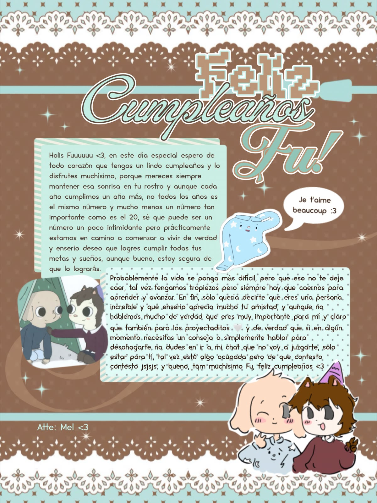
¡FELI CUM AAHHHHHH !!
✦ Tus cualidades - La habilidad de hacernos reír incluso en los momentos más inesperados
✦ Tus fortalezas - Tu resiliencia, tu fuerza y esa capacidad de seguir adelante incluso cuando las cosas se ponen difíciles
✦ Un recuerdo - Cuando te probaste la ropa de la botarga de Minnie 🥺
✦ Algo que admiramos - Tu resiliencia y tu fuerza para seguir adelante ugu
✦ Algo que nos hace reír - Tus bailesitos DJAJKSA
✦ Algo que te hace único - Tu forma de ser, simplementeeso
✦ Algo que aprendimos de ti - Aprendí a no prender cam JISJAKJSA...BAITTT. Aprendí que todos tenemos nuestras propias dolencias y dificultades a lo largo de la vida, pero tú eres una prueba de que, a pesar de todo eso, merecemos reír y seguir adelante. Merecemos darnos más oportunidades, porque cada día es una nueva oportunidad 🍓 _Me alegra que, a pesar de todo, la paz llegue a mí cuando ustedes entran en mi día a día_
✦ Una frase que te representa - "wn qliao" KJASKAS 🇨🇱
✦ Un momento especial - Cuando nos quedamos hasta tarde conversando sobre nuestras jocherias
✦ Una cosa que esperamos que nunca cambies - Tu forma de sonreírle a la vida hno
✦ Algo que queremos verte lograr - Todas tus metas y sueños. Queremos verte conseguir todo aquello que mereces y que algún día puedas mirar atrás y sentirte orgulloso de todo lo que lograste wiwiwi
✦ Una recomendación para tus 20 - Ahora que tu edad tendrá un 2 por los próximos diez años JAAAAJAJA NUV, solo puedo decirte que sigas enfrentando la vida con ese brillo interior que tienes e irradias. No dejes que nadie lo apague y nunca te rindas ante las adversidades. Todavía tienes muchísimo por vivir, descubrir y construir amiwito
✦ Una canción que te dedicaríamos - “Open Arms” — Epic: The Musical
✦ Un personaje que nos recuerda a ti - Boris, Kaufmo y, aunque técnicamente no es un personaje... los mapaches hno.... y me recuerdas mucho al Odiseo de Ximena Natzel, es decir, en su diseño de odiseo jejejej
✦ Un lugar donde te imaginamos - En un restaurante con luz cálida, de noche, probando comida peruana sikesi NO SÉ PORQUE PERO CON UNA BANDERILLA CHILENA o algo ref a Chile
✦ Una palabra que te describe: Valeroso
✦ Una predicción para tu año: Vas a salir embarazado (BAITTT) Que tus 20 vengan llenos de cariño, nuevas experiencias y momentos bonitos. Tal vez algunos días sean difíciles, pero eres mucho más capaz de lo que crees papu
✦ Un deseo para ti: Que tengas siempre la libertad de decidir qué es bueno para ti y que sigas teniendo esa fuerza y ese valor que tanto te caracterizan sikesi
✦ Un agradecimiento - Gracias por estar siempre ahí para escucharnos, por sacarnos una sonrisa con tus ocurrencias, por ser alguien tan especial y por haberte convertido en una persona que se hace querer tanto
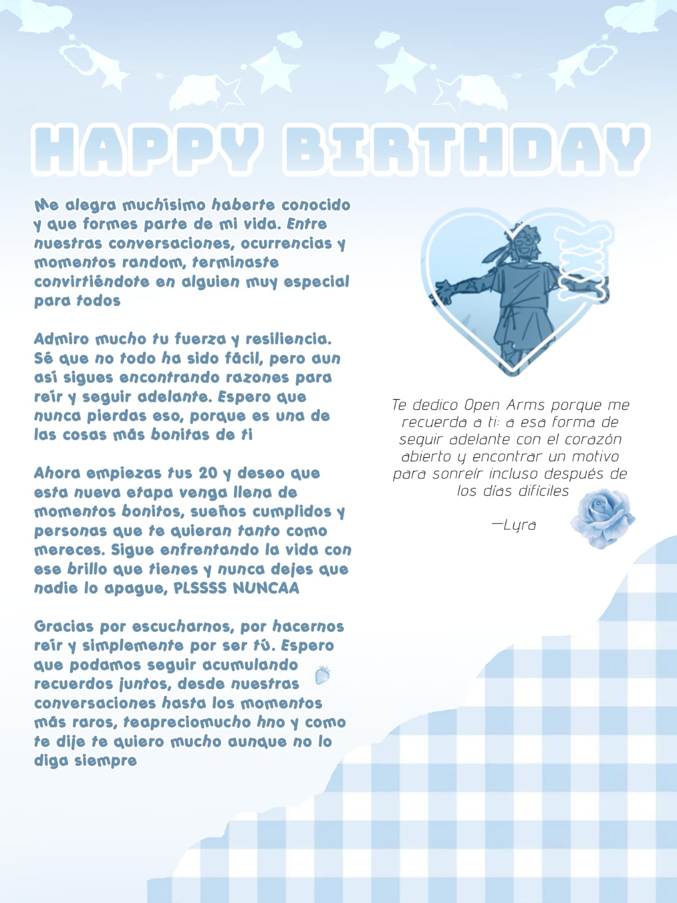
¡FELI CUM AAHHHHHH !
Tus cualidades: ERES GUAPO, GUAPÍSIMO BRO, además de guapo chistoso, carismático y además de buenos gustos, mira todo lo que es ese combo grrrr
Tus fortalezas: Se me hace simplemente increíble que a pesar de todas las dificultades que haz vivido y vives a lo largo de tu vida y en lugares como tú propia casa o incluso cosas que sientes contigo mismo, siempre sales adelante y además siempre como el tipazo que eres, sin perder ni tu esencia ni tu brillo, genuinamente te admiro mucho y además de corazón espero que mejores siempre.
Un recuerdo: Inolvidable cuando jugamos fortnite y la manquee terrible, también cuando te decía cosas cuando prendias camara y te ponías bien uwu JAJAJAJAJAJ, era muy divertido
Algo que admiramos: Creo que ya lo dije antes pero no está de más que siga diciendo cuánto admiro la fuerza mental y la madurez que posees, aunque nadie es irrompible y espero que aguantes lo suficiente para superar todo lo que ahora mismo afrontas.
Algo que nos hace reír: Cuando prendes camara y te pones a hacer cosas random JAJAJAJ, Es el pinaculo de la comedia
Algo que te hace único: Definitivamente ese acento chileno es algo a lo que asocio perfectamente a ti JAJAJAAJ, y es muy ICONICO tuyo a decir verdad, nunca lo cambies porfa
Algo que aprendimos de ti: Nunca estoy solo, siempre llegarán personas mejores y los malos momentos son solo eso: momentos, al lado de las personas correctas todo mejorara
Una frase que te representa': "Oe po la raja wn culiao" JAJAJAJAJ NO SE POR QUE TE ESCUCHE UNA VEZ DECIR ESO PERO INCLUSO SE ME LLEGO A PEGAR, INEVITABLE NO PENSAR EN TI
Un momento especial: Recuerdo con mucho cariño una vez en la que me consolaste cuando supiste la situación por la que estaba pasando, y a decir verdad me consoló mucho y lo sigo apreciando a son de hoy
Una cosa que esperamos que nunca cambies: Nunca cambies tu forma de ser, eres una persona muy empática y gentil, y de ese tipo de personas quedan muy pocas, me alegra que seas una de ellas.
Algo que queremos verte lograr: LLEGA A CHAMPION EN EL LOL MI CAMPEÓN QUE SE CUANTO TE GUSTA
Una recomendación para tus 20: Yo sé que sería difícil, pero
Una canción que te dedicaríamos: Hug me - Pharrell Williams :D
Un personaje que nos recuerda a ti: Definitivamente Boris de Myth of the machine, es inevitable JAJAJA
Un lugar donde te imaginamos: De tanto verte de regreso a tu casa caminando, la verdad es inevitable no imaginarte caminando por una acera o cesped
Una palabra que te describe: "Furro" JAJAJAJJJDDJJSJDJBB
Una predicción para tu año: Todo va a mejorar, y seguirás siendo el mismo tipo de persona que todos queremos y apreciamos con nuestro corazón, cuentas con cada uno de nosotros para apoyarte.
Un deseo para ti: Espero que puedas ser más libre fu, hacer las cosas que te gustan sin restricciones y tus problemas, además de que la relación con los que te rodean se incremente y se haga fuerte cada día más.
Un agradecimiento: Gracias por acompañarme, gracias por ser como eres, gracias por hacernos reír a todos, realmente eres el corazón de este grupo, nunca cambies.
Un mensaje final de cumpleaños: Pásala bien, espero de todo corazón que nunca cambies, eres perfecto tal y como eres, tendrás fortalezas y defectos como todos los seres humanos pero en cada una de ellas está en tu esencia y espero que así persista hasta que el mundo se acabe, que cumplas 729282292 años más fu, eres el mejor chileno que existe JAJAJAJA, Jafet te quiere mucho ❤️
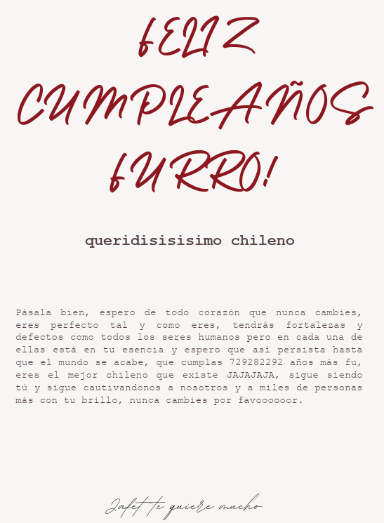
¡FELI CUM AAHHHHHH !
Tus cualidades: tu bondad
Tus fortalezas: tu perseverancia
Un recuerdo: la primera vez que hablamos como amigos por el "PORQUE TU PARECE UNA ÑEMA?!"
Algo que admiramos: como apesar de que aveces las cosas estan en tu contra jamas te dejas vencer
Algo que nos hace reír: cuando te pusiste el traje de minie
Algo que te hace único: tu sentido del humor tan unico
Algo que aprendimos de ti: jamas darnos por vencidos
Una frase que te representa: aaaaa ctm
Un momento especial: cuando estabamos en llamada viendote jugar el mod de cuphead imposible
Una cosa que esperamos que nunca cambies: lo brillanete de tu alma
Una recomendación para tus 20: que la edad no te amargue jamas el humor
Una canción que te dedicaríamos: Amigo triste-cherri
Un personaje que nos recuerda a ti: Boris
Un lugar donde te imaginamos: manicomio
Una palabra que te describe: Inspirador
Una predicción para tu año: vas a dejar el lol
Un deseo para ti: que tu año este lleno de felicidad y exitos
Un agradecimiento: por aceptarme en el grupo tan rapido y confiar en mi
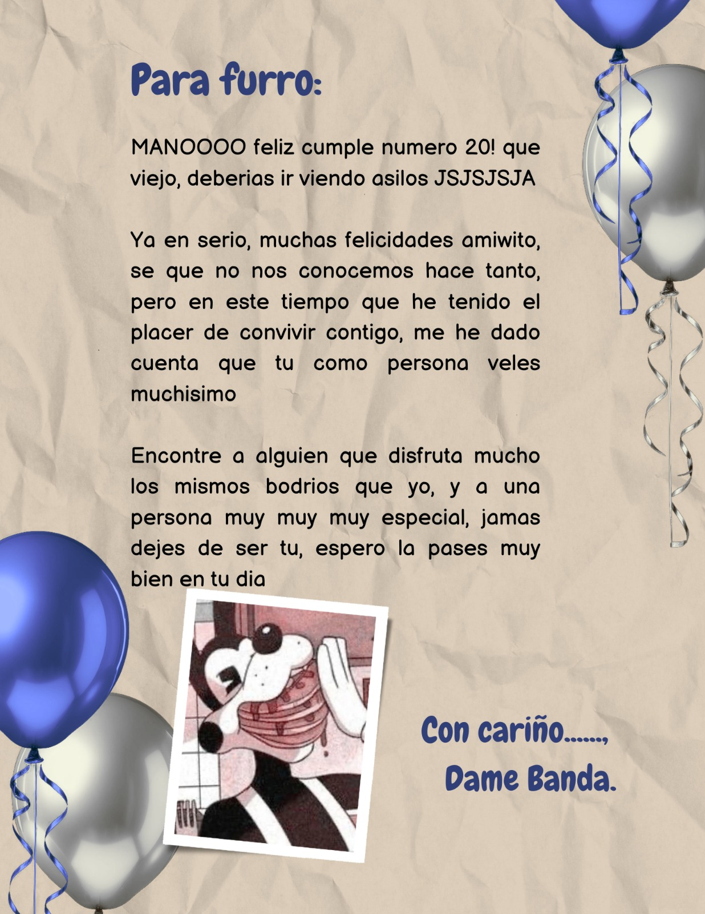